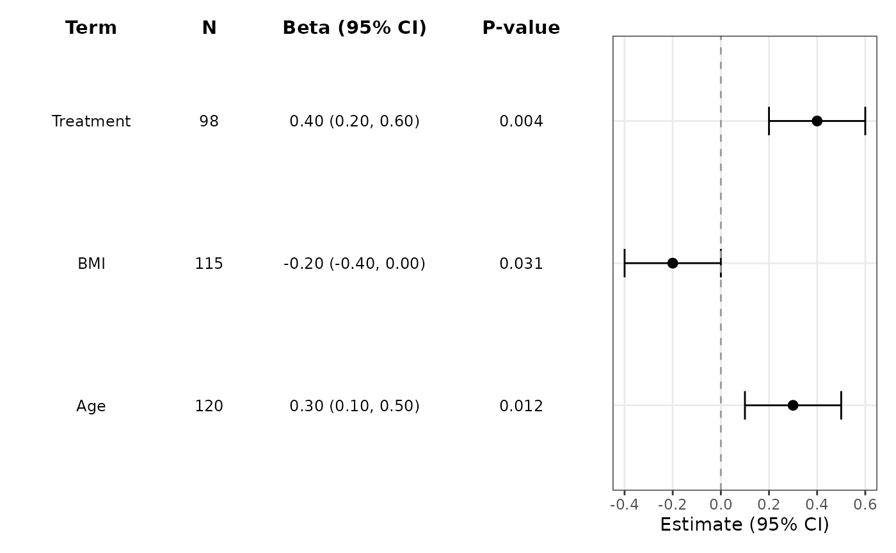
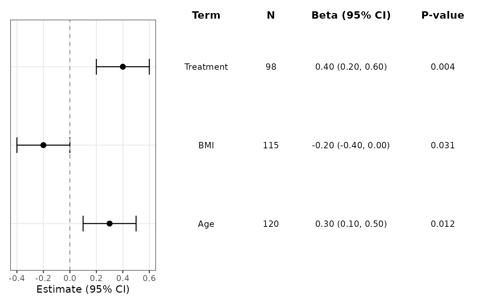

Compose a summary table onto a forest plot.
Usage
add_forest_table(
plot = NULL,
position = c("left", "right"),
show_terms = TRUE,
show_n = NULL,
show_events = NULL,
show_estimate = TRUE,
show_p = FALSE,
columns = NULL,
term_header = "Term",
n_header = "N",
events_header = "Events",
estimate_label = "Estimate",
p_header = "P-value",
digits = NULL,
text_size = NULL,
header_text_size = NULL,
header_fontface = "bold",
header_family = NULL,
striped_rows = NULL,
stripe_fill = NULL,
stripe_colour = NULL,
grid_lines = FALSE,
grid_line_colour = "black",
grid_line_size = 0.3,
grid_line_linetype = 1
)Arguments
- plot
A plot created by
ggforestplot(). Leave asNULLto use+ add_forest_table(...)syntax.- position
Whether to place the table on the left or right of the forest plot.
- show_terms
Whether to show the term column in the table.
- show_n
Whether to show the
Ncolumn. Defaults toTRUEwhen the underlying plot data includes anncolumn.- show_events
Whether to show the
Eventscolumn. Defaults toTRUEwhen the underlying plot data includes aneventscolumn.- show_estimate
Whether to show the formatted estimate and confidence interval column.
- show_p
Whether to display the p-value column.
- columns
Optional explicit columns to display in the side table, in the order they should appear. Accepts names such as
"n","events", and"term", or positions1:5corresponding toterm,n,events,estimate, andp. When supplied, this overrides the defaultshow_*column selection.- term_header
Header text for the term column.
- n_header
Header text for the
Ncolumn.- events_header
Header text for the
Eventscolumn.- estimate_label
Header label for the estimate column.
- p_header
Header text for the p-value column.
- digits
Number of digits used when formatting estimates and p-values. Defaults to
2.- text_size
Text size for table contents. Defaults to
3.2.- header_text_size
Header text size for table column labels. Defaults to
11.- header_fontface
Font face used for table column labels. Defaults to
"bold".- header_family
Optional font family used for table column labels.
- striped_rows
Whether to draw alternating row stripes behind the table. Defaults to the stripe setting used in
ggforestplot().- stripe_fill
Fill colour used for striped rows. Defaults to the stripe fill used in
ggforestplot().- stripe_colour
Outline colour for striped rows. Defaults to the stripe outline used in
ggforestplot().- grid_lines
Whether to draw black horizontal grid lines in the table.
- grid_line_colour
Colour used for the table grid lines.
- grid_line_size
Line width used for the table grid lines.
- grid_line_linetype
Line type used for the table grid lines.
Value
A patchwork-composed plot containing the forest plot and side
table, or a ggplot add-on object when plot = NULL.
Examples
coefs <- data.frame(
term = c("Age", "BMI", "Treatment"),
estimate = c(0.3, -0.2, 0.4),
conf.low = c(0.1, -0.4, 0.2),
conf.high = c(0.5, 0.0, 0.6),
sample_size = c(120, 115, 98),
p_value = c(0.012, 0.031, 0.004)
)
p <- ggforestplot(coefs, n = "sample_size", p.value = "p_value")
add_forest_table(
p,
position = "left",
show_n = TRUE,
show_p = TRUE,
estimate_label = "Beta"
)

ggforestplot(coefs, n = "sample_size", p.value = "p_value") +
add_forest_table(
position = "right",
show_n = TRUE,
show_p = TRUE,
estimate_label = "Beta"
)
